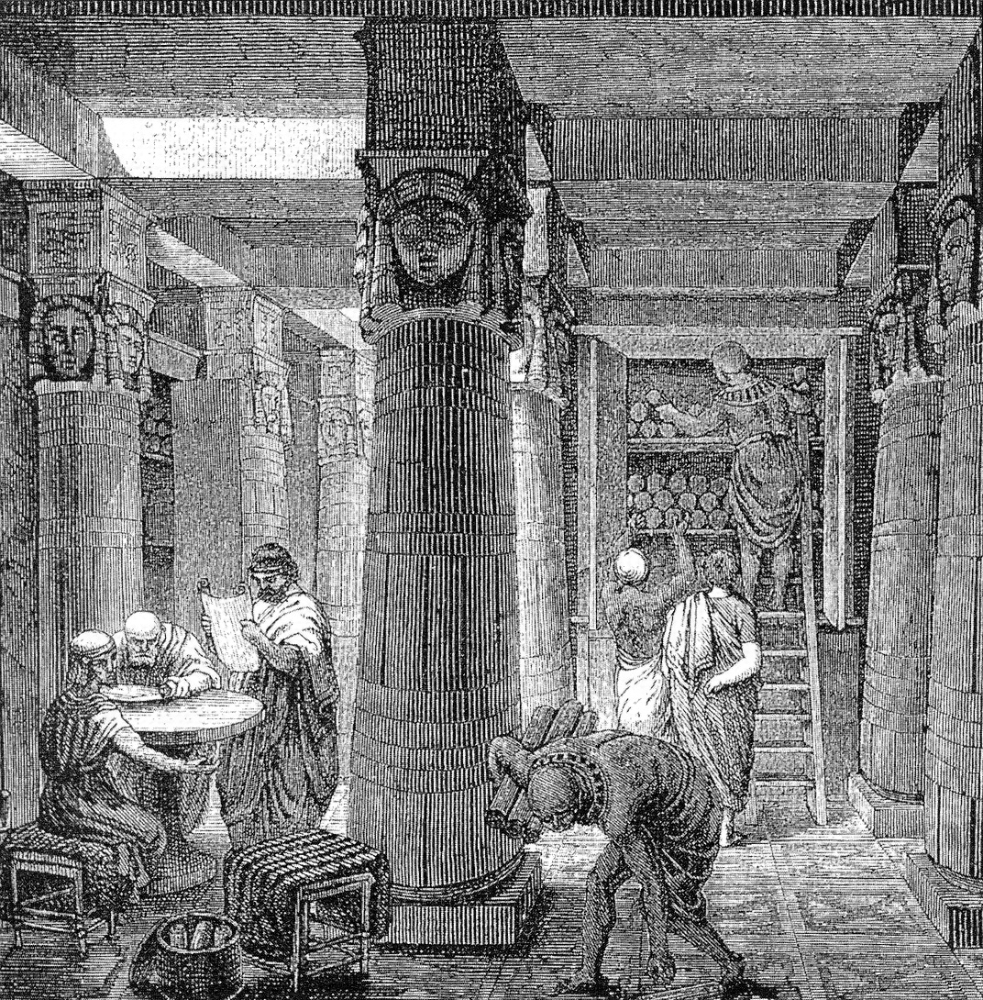

The Library of Alexandria
The rise, long decline, and enduring legacy of the ancient world’s greatest centre of knowledge.
Read articleBeyond the timeline
Welcome to the hidden archives of our website, where the past meets the curious and the random converges with the intriguing. Browse around—who knows, you might just unearth a digital relic that piques your interest!

The rise, long decline, and enduring legacy of the ancient world’s greatest centre of knowledge.
Read article
The First World War, the partition of Ottoman lands, and the end of the Ottoman Sultanate and Caliphate.
Read article
A historical-theological hypothesis about migration, Arabian geography, and prophetic expectation.
Read article
Shabbetai Tzvi, the Dönmeh, the Young Turks, and the end of the Ottoman order.
Read article
From Golconda and the Qutb Shahis to the Nizams, Indian integration, and modern Telangana.
Read article
How the fall of al-Andalus helped create the circumstances in which Columbus sailed west.
Read article
World capitals by the water's edge—a country-by-country geographical reference.
Explore reference
A concise Biblical–Abrahamic timeline from the Exodus through the kingdoms, exile, Second Temple period, and Roman rule.
Read on BasaʾirNo articles match that title.